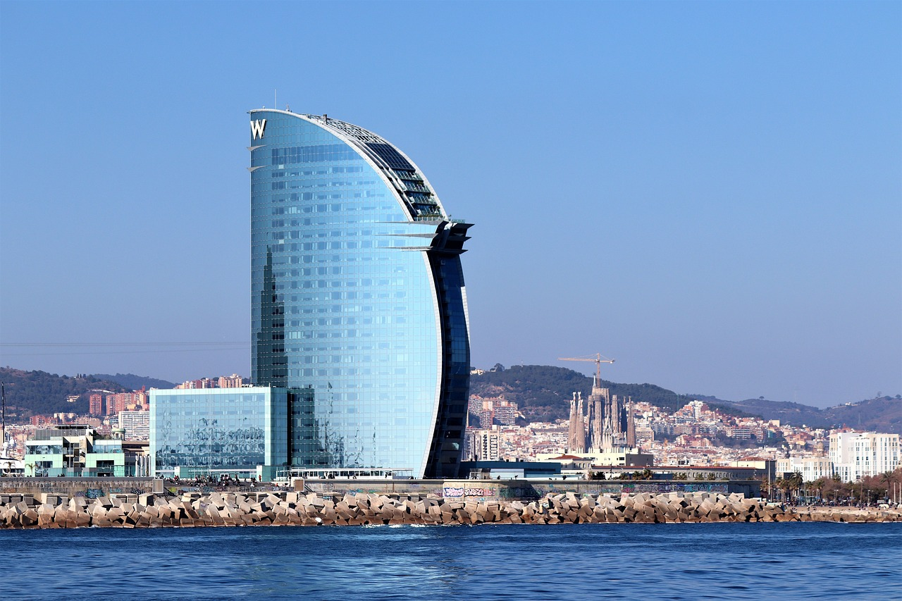
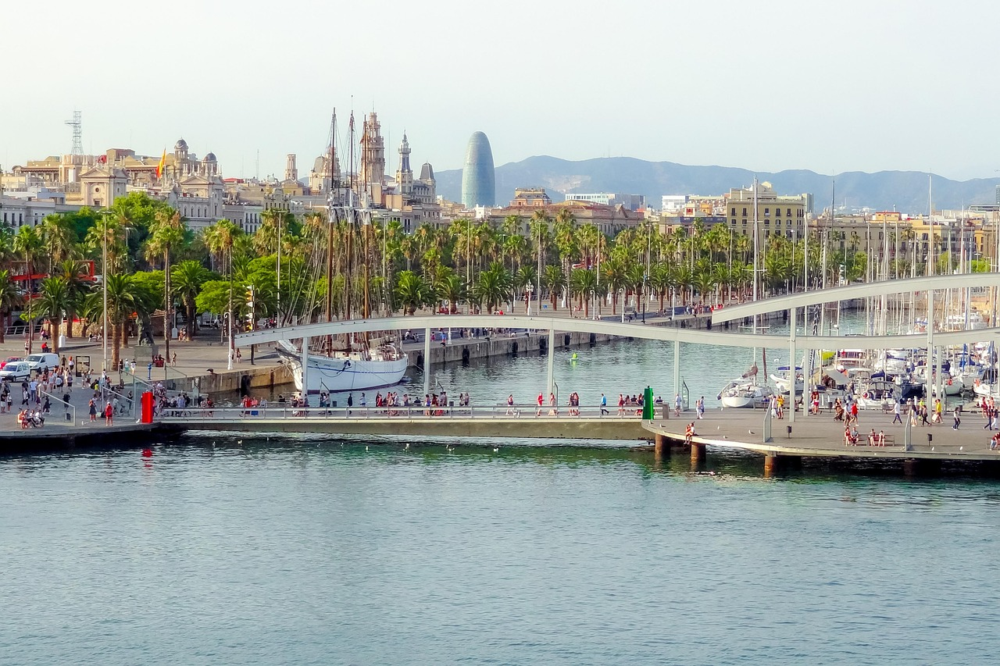
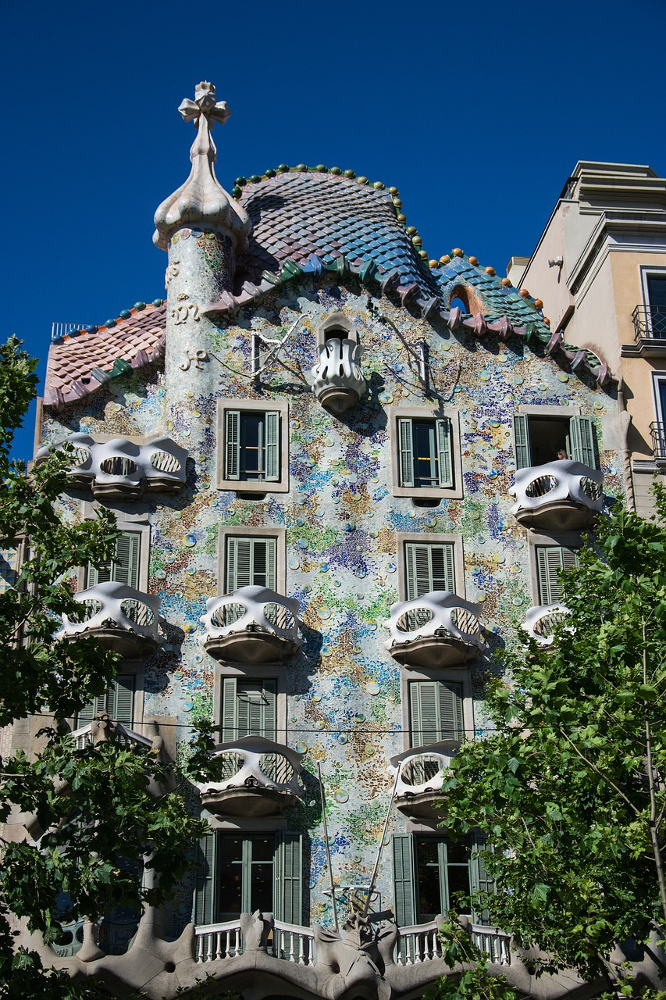
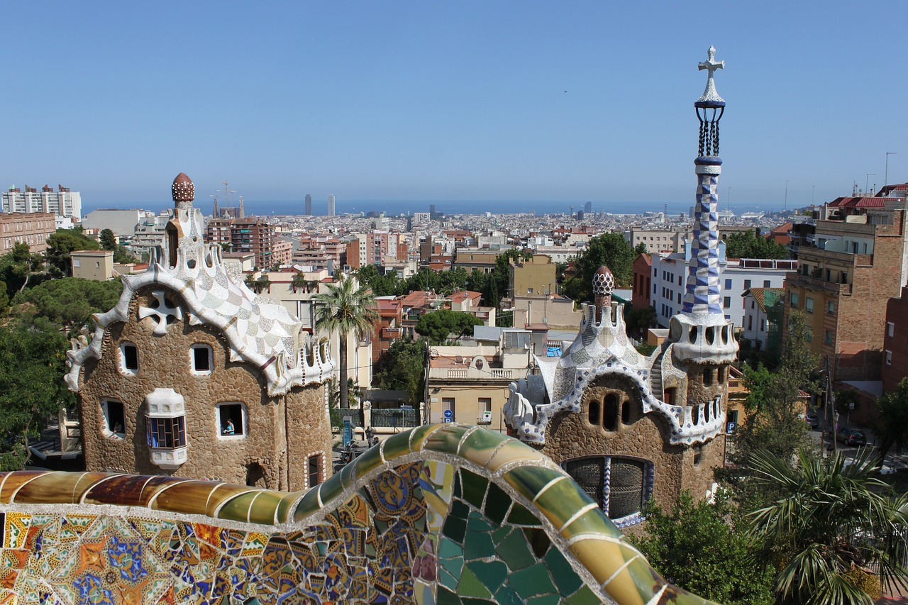
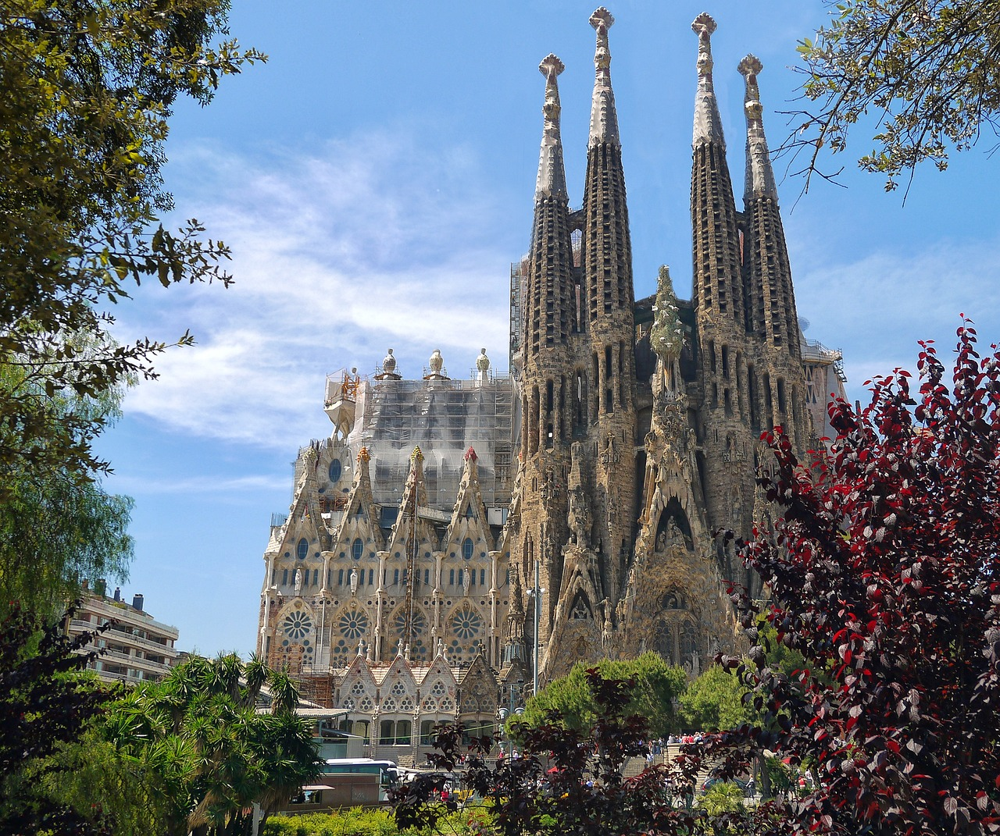

Galerie





Hier findest du eine Auswahl an Bildern von besonderen Orten in Barcelona. Vom berühmten Hotel W bis zur faszinierenden Sagrada Familia – jedes Bild erzählt seine eigene Geschichte.
Tipp: Achte auf die kleinen Details in der Architektur – besonders bei Gaudís Bauwerken!




